johdanto

Yksinkertaisen verkkosivuston kehittämiseen tarvitsemme 3 "teknologiaa" tai jopa 2 (tarkastelemme JavaScriptiä vain täydellisyyden vuoksi ja käytämme vain yhtä sen toiminnoista).
Miksi "teknologiat" eivätkä ohjelmointikielet?
Näiden takia vain JavaScriptiä voidaan kutsua täysimittaiseksi kieleksi, ja html:llä ja css:llä on niin yksinkertainen syntaksi ja rajoitettu toiminnallisuus, että ne eivät edes kuulu tämän käsitteen piiriin.
HTML
verkkosivujen merkintäkieli, jonka avulla luomme erilaisia käyttöliittymäelementtejä (kuvia, painikkeita, tekstiä, luetteloita, videoita).
CSS
CSS-tyylisivu, räätälöimme aiemmin html:llä luotuja käyttöliittymäelementtejä (muutamme väriä/fonttia/taustakuvaa ja elementtien järjestystä sivulla)
Näin voimme luoda kauniin staattisen verkkosivuston - joka meidän tapauksessamme on enemmän kuin tarpeeksi.
tiedostot ja kansiot
- Lataa kätevästi koodieditori Visual Studio Code
> linkki <
- Luo kansioita projektikansioon
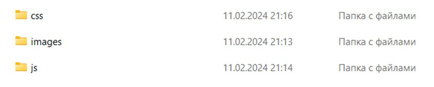
- Avaa kansio koodieditorissa Tiedosto > avaa kansio
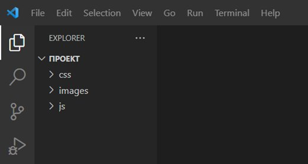
- Luomme sivuston index.html pääsivun
Miten luodaan tiedosto, jonka tunniste on .html?
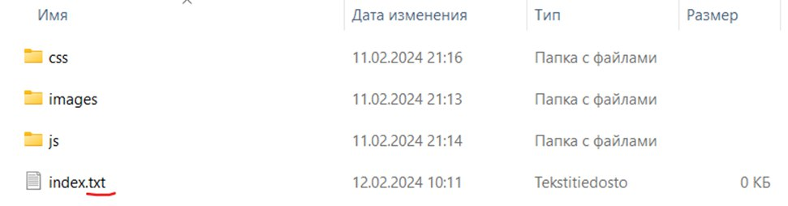
Kun olet luonut tekstitiedoston, vaihda .txt muotoon .html
Tai luo heti koodieditorissa tarvittava tiedosto painamalla hiiren oikeaa painiketta
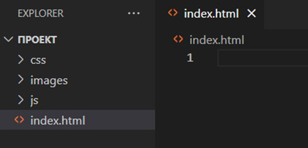
- Luo perus-html-koodi kirjoittamalla "!" ja napsauta ensimmäistä vihjettä
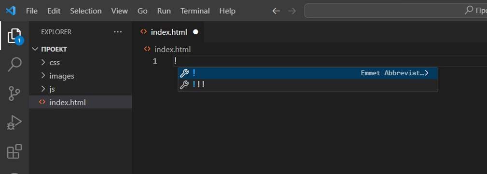
Nyt projektimme on valmis😊
Luomme sivuston rakenteen
Html koostuu kokonaan esimerkiksi tunnisteista
<div></div> on vain "laatikko" käyttöliittymäelementtien yhdistämiseen.
<button></buttony> - painike
<p></p> - kappale (tämän tunnisteen sisällä oleva teksti alkaa kappaleella)
"/"-symboli tarkoittaa tagin sulkemista
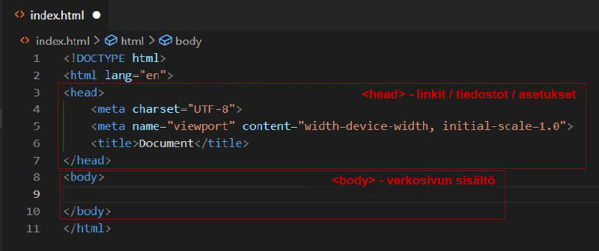
Miltä sivuston yleensä pitäisi näyttää? Mitä minun pitäisi luoda?
Verkkosivustoja rakennettaessa käytetään pääasiassa klassista mallia:
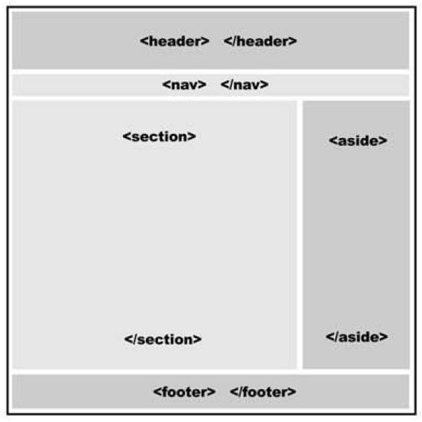
Tämä malli ei ole pakollinen, se oli vain aluksi vähemmän suosittu.
Ja tässä on tämä kaavio käyttämällä esimerkkiä todellisesta sivustosta:
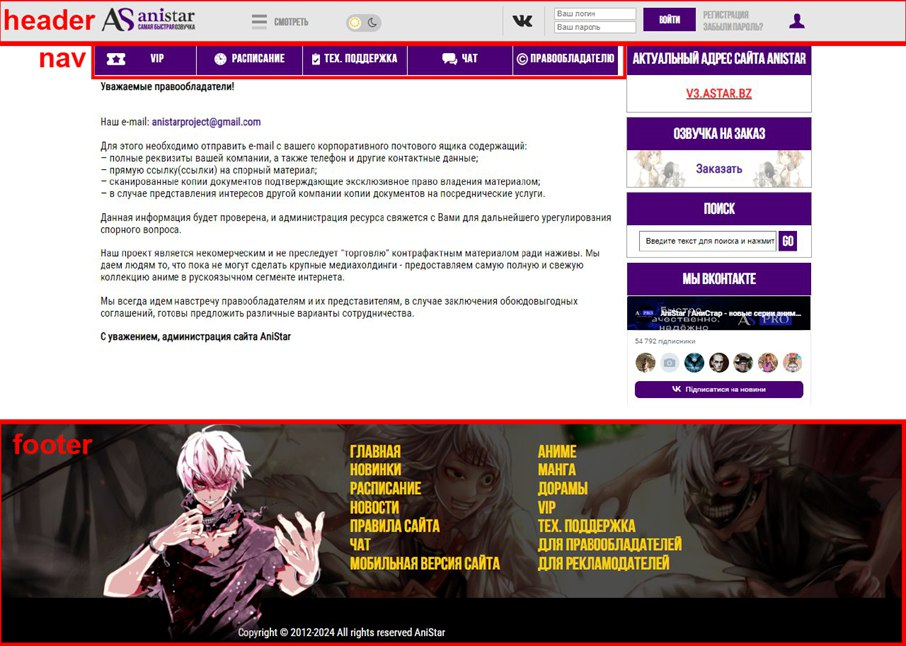
Odota, niin head vai header?
- Molemmat. Se on vain, että head on suunniteltu yhdistämään kaikki kirjastot/tiedostot, mutta header on luotu vain käyttömukavuuden vuoksi.
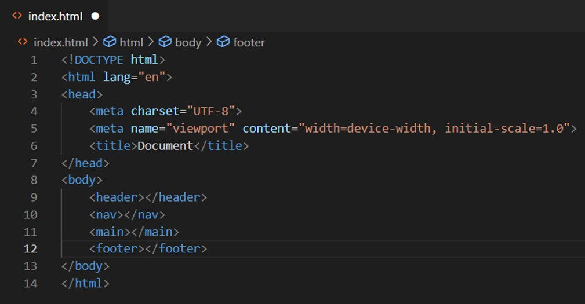
Tunnisteilla <header>,<nav>, <main>, <footer> ei ole mitään vaikutusta. Sivusto toimii täsmälleen samalla tavalla ilman niitä.
MUTTA koodin lukeminen on erittäin vaikeaa.
laatikon suunnittelu
Kuvitellaan nyt miltä sivusto näyttää
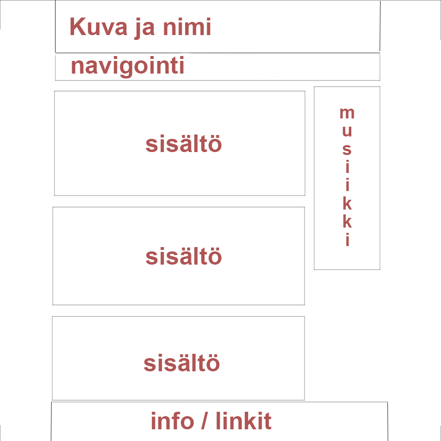
- siirrä mediatiedostoja "images" - kansioon (meillä on vähän tiedostoja, joten voit käyttää vain yhtä kansiota).
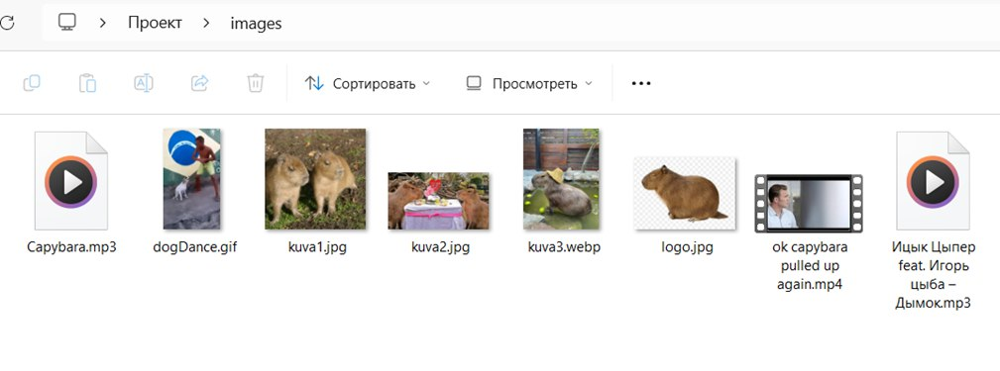
Seuraavaksi luomme sivuston otsikon, luomme logon ja nimen. Laitetaan nämä kaksi elementtiä <div>-laatikkoon.
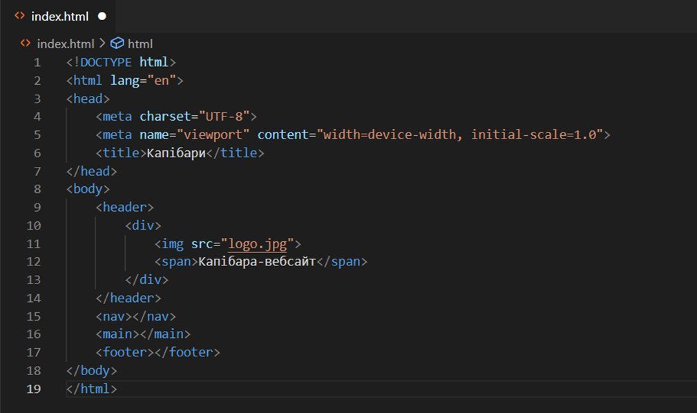
Miksi <div>?
Jotta tulevaisuudessa, kun työskentelemme CSS:n kanssa, meidän on helpompi tehdä sisennyksiä, värittää tarvittavat alueet ja asettaa elementtien vaaka-/pystyasettelu laatikkoon.
- Navigointiin luomme kolme tekstilinkkiä ("a"-tunniste muuttaa sisällä olevan tekstin/kuvan linkiksi).
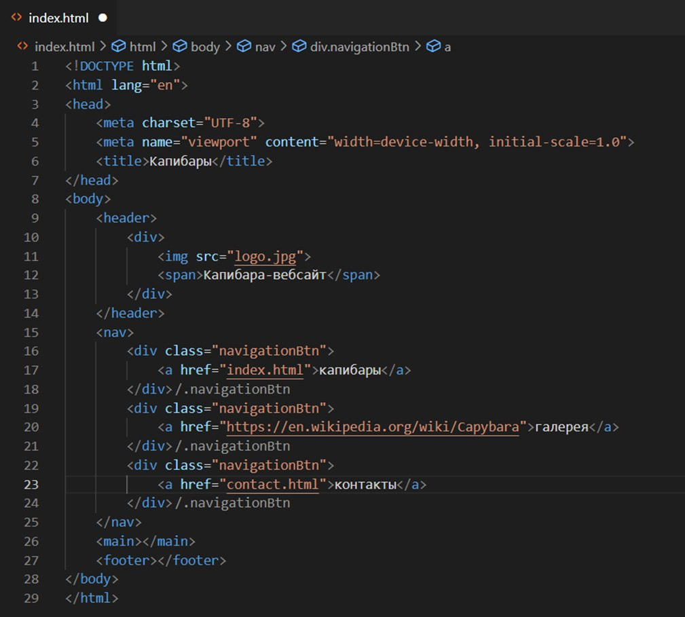
Mitä class on ?
HTML-kielessä tageilla voi olla omat "attribuuttinsa". Niitä ei ole paljon, lähinnä luokkaa ja id:tä käytetään useimmiten.
Class – antaa meille mahdollisuuden asettaa (esimerkiksi saman värin) kaikille elementeille, joissa se on määritetty, kun työskentelemme myöhemmin CSS:n kanssa
Id – tekee pohjimmiltaan saman asian kuin luokka, mutta on korkeammalla hierarkiassa
Esimerkiksi:
<p class="paragraph">kissa</p>
<p class="paragraph" id="veryImportantParagraph">kissa</p>
<p class="paragraph">kissa</p>
/*
Määritimme "kappale"-luokan tekstin väriksi mustaksi ja "VeryImportantParagraph" -tunnukseksi punaiseksi.
*/
Tämä on mitä näemme sivustolla:
kissa
kissa
kissa
Seuraavaksi luomme "uutissyötteen" ja sivupalkin musiikilla.
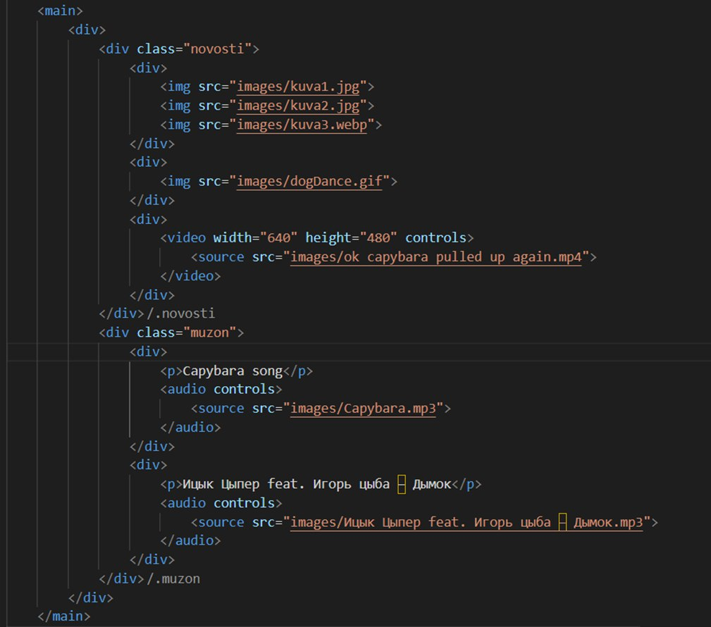
Ja lopuksi, sivuston "alatunnisteeseen" lisäämme linkin sosiaaliseen verkostoon ja jonkinlaisen merkinnän, kuten oikealla sivustolla.
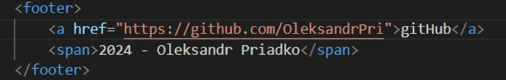
html - verkkosivu
Nyt se on valmis! Luomamme verkkosivusto näyttää tältä:
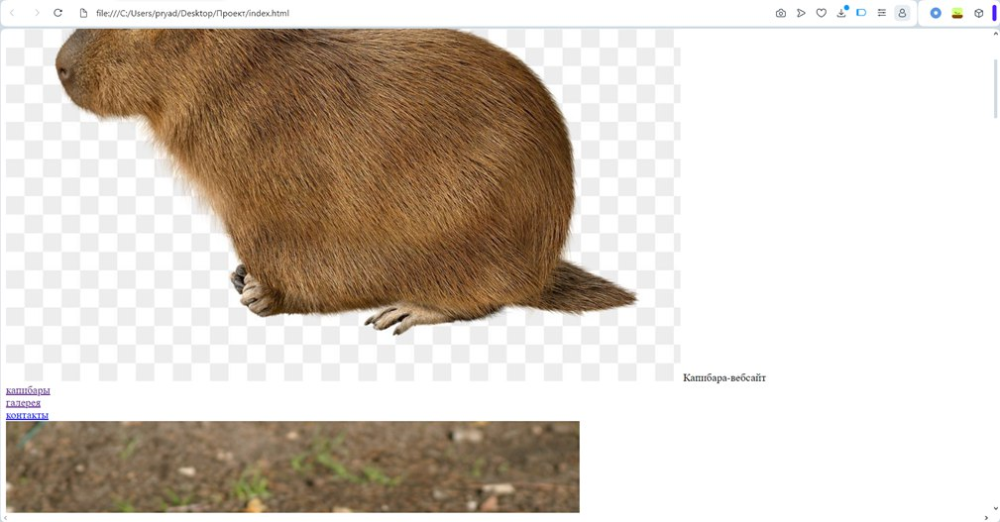
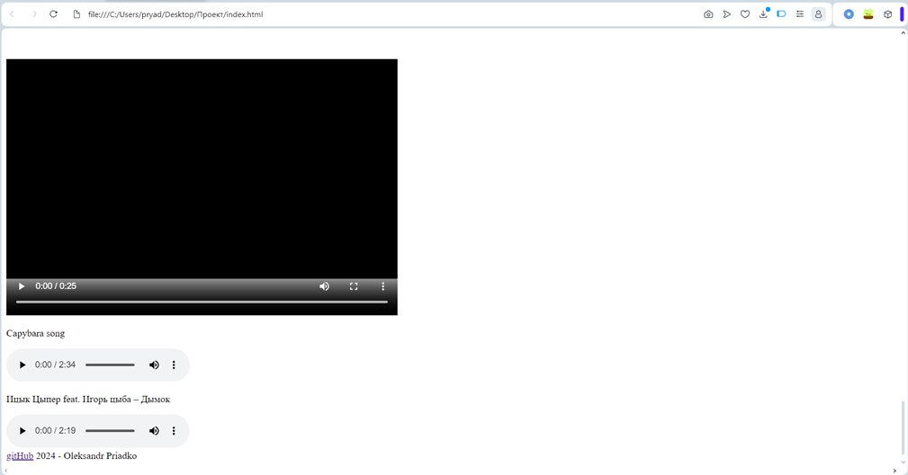
Se ei ole vielä niin kaunis, mutta se johtuu siitä, että emme ole vielä käyttäneet CSS-tyylejä, minkä teemme seuraavalla sivulla.